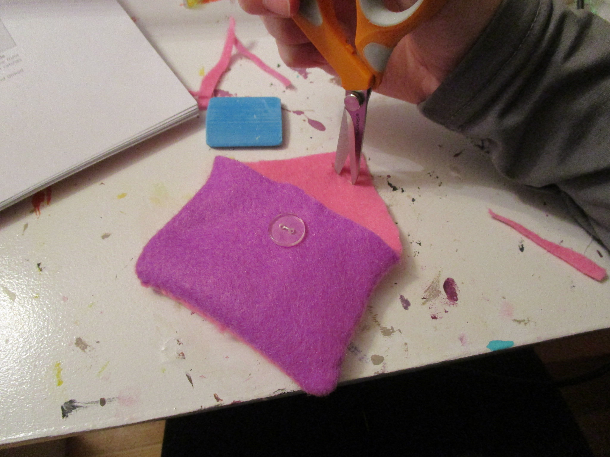

Easy Wallet Project
If you would like to know how to make an adorable wallet, keep on reading :)

You will need:
- something to sew with
(I used a sewing machine, but you can just use a needle and thread)
- needle and thread
- 1 button
- 2 pieces of felt
- fabric scissors
- fabric marker/chalk
(you don't have to use this, it's just easier to cut more accurate shapes)
Step 1:
Cut the felt into 2 pieces, 1 house shaped, 1 rectangle shaped.(see picture below)

Step 2:
Sew the two pieces of felt together and then turn it inside out for a cleaner edge.
Step 3:
Sew on a button.
Step 4:
Cut a slit on the flap of your wallet

and thats it!
return to homepage